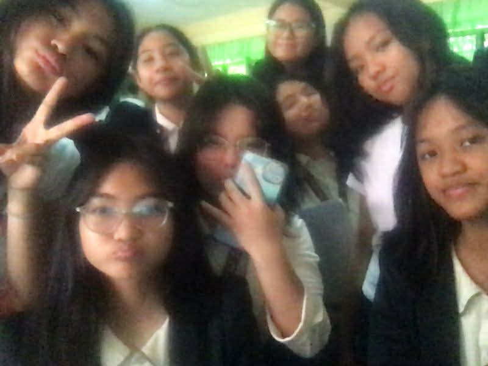
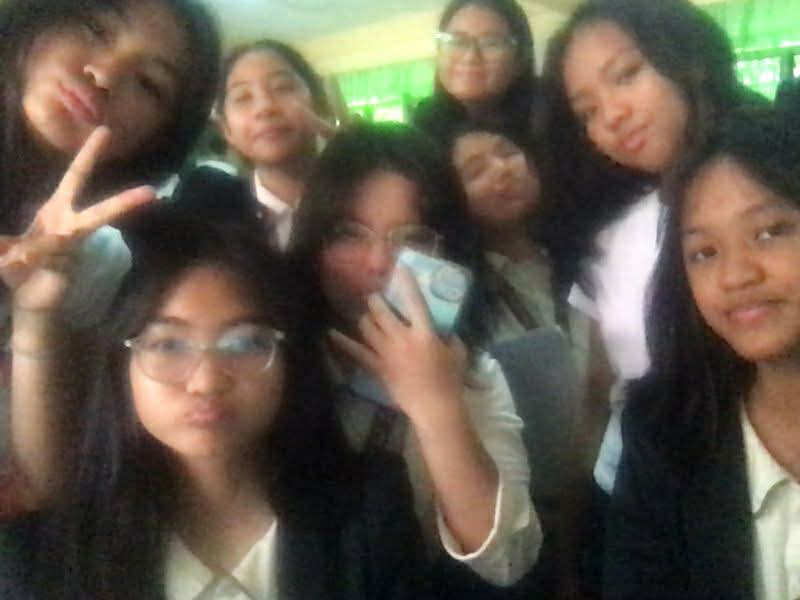
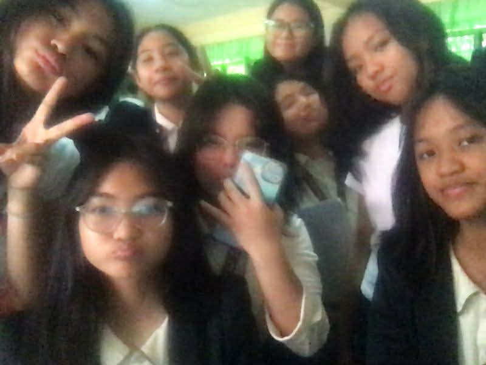

Artheia Misha C. Tamayo
14
June 09, 2011

Though I have a pretty wide range of friends, they all help me grow individually and I can proudly call all of them my safe space. The first picture is my trio, torpes/oa sanctuary, with Reese Cruz and Meigan Calderas. They are the first people who made LPSCI feel more like home. We have many similarities like music taste, fashion sense, humor, and many more aspects of our characteristics. The reassurance I feel around them is very abundant and I am at peace knowing that they are my constants. The second picture is one of the most unexpected friendgroup but dearest to my heart, Homosapiens! This circle of friends formed through a performance task and we --- me, Bela Paguigan, Nicole Kierulf, Gabriel Baybayon, Uniquo De Asis, Steven Millan, and Jim Tabile --- all ended up in the same group and the rest is history. Despite our differences, we all just clicked with each other through music and became the best of friends. This last picture is the girls of 9-Faith. We became one friend group after having lunch together and that eventually became a habit for us. I'm so glad that I met them and get to call them my friends because they just made this school year more memorable! I am grateful that God has granted me many friends that bring out the best in me!
My family consists of my mom Michelle, my dad Arthur, my younger siblings Ava and Amber. In this family picture you'll see we are with my tita Aileen, my lolo Arthur, my late lola Erlinda because we were celebrating the New Year, 2025 (we are also neighbors!). My favorite memories with them are the ones where we get to go swimming or have an outing! I know that even if I make mistakes in life and if I feel that I'm not accepted anywhere, they will always welcome me with open arms. They will always be the ones to tell me where I went wrong and guide me to avoid that, care for me, and stay by my side no matter what. I am blessed by the LORD to be in this beautiful family I can always call home!